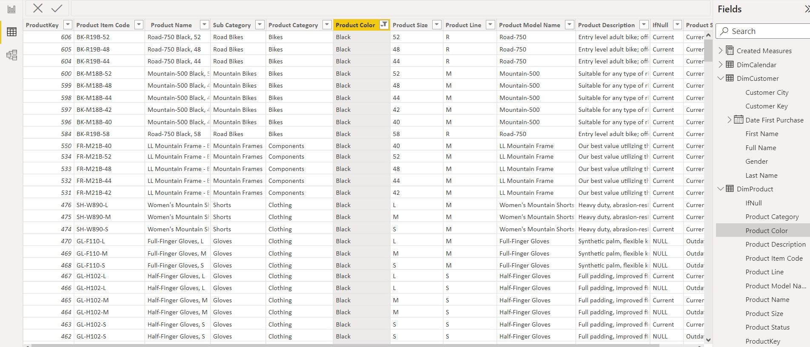
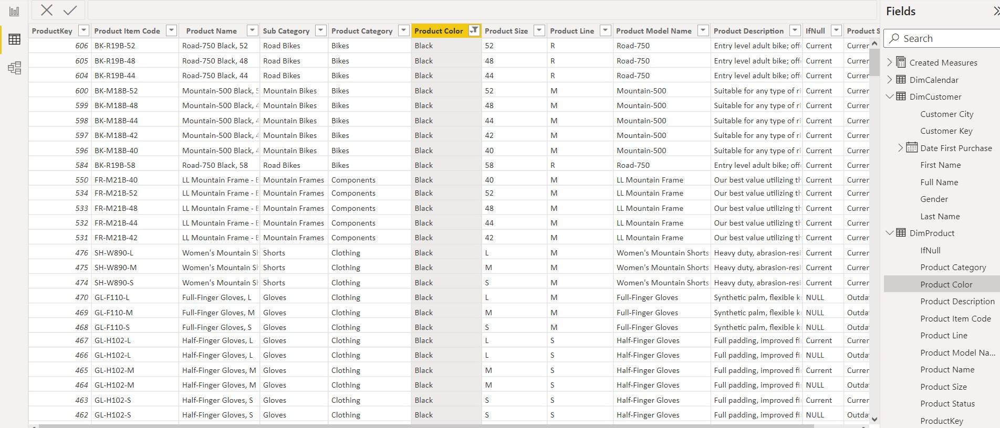

Who I am
Hello there! I'm Anthony, and I'm currently pursuing Mathematics and Business Administration with a computing minor at the University of Waterloo. I'm enthusiastic about the world of data analytics. In my spare time, I love weightlifting training, cooking, going for drives, and exploring different cultures and cuisines.
 
